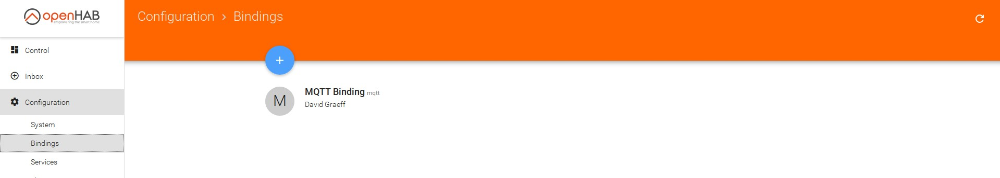
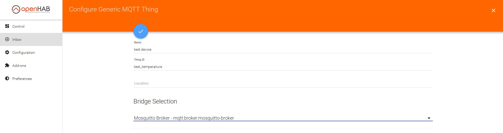

Displaying a received temperature in openHAB
This guide shows the configuration of openHAB to display a received temperature and the time of receipt.
Thereby the temperature is received as string per MQTT.
Install Mosquitto MQTT Broker
As the installation is different for each distribution, this guide will not deal with this topic.
Adding configuration files to openHAB
In the openHAB configuration folder (under Linux: /etc/openhab2/), the file "rules/temperature.rules" must be added and the file "items/default.items" must be extendet by the following code.
Configuration files
A documentation about the default.items file can be found here.
Adding a MQTT binding to openHAB
To use MQTT in openHAB, a binding must be added. A MQTT binding can be added in the openHAB PaperUi under Configuration/Bindings.
Adding a "Generic MQTT Thing" to openHAB
After that, a "Generic MQTT Thing" must be added under Configuration/Things.
This can be done by clicking on the blue "+" button, choosing "MQTT Binding" and then clicking "MANUALLY ADD THING".
Then, a name for the "Generic MQTT Thing" can be choosen, where the "Thing ID" must be the same as in the string "Test_Temperature_Str" in the file default.itmes.
In this example test_temperature (mqtt:topic:test_temperature:test_temperature_channel)
As Bridge, Mosquitto Broker must be selected.

Adding a "Channel" to the "Generic MQTT Thing"
Now, a "Channel" can be added to the previously created "Generic MQTT Thing". The previously created Thing can be found under Configuration/Things.
In the opening menu, "Text Value" must be selected as "Channel type".
After that, in the upcoming menu the "Channel id" and the "MQTT State Topic" must be entered, where the "Channel id" must be the same as in the string "Test_Temperature_Str"
in the File default.items. In this example test_temperature_channel (mqtt:topic:test_temperature:test_temperature_channel).
Except that, the "MQTT state topic" must match the topic of the temperature sensor (e.g. "/home/balcony/temperature").